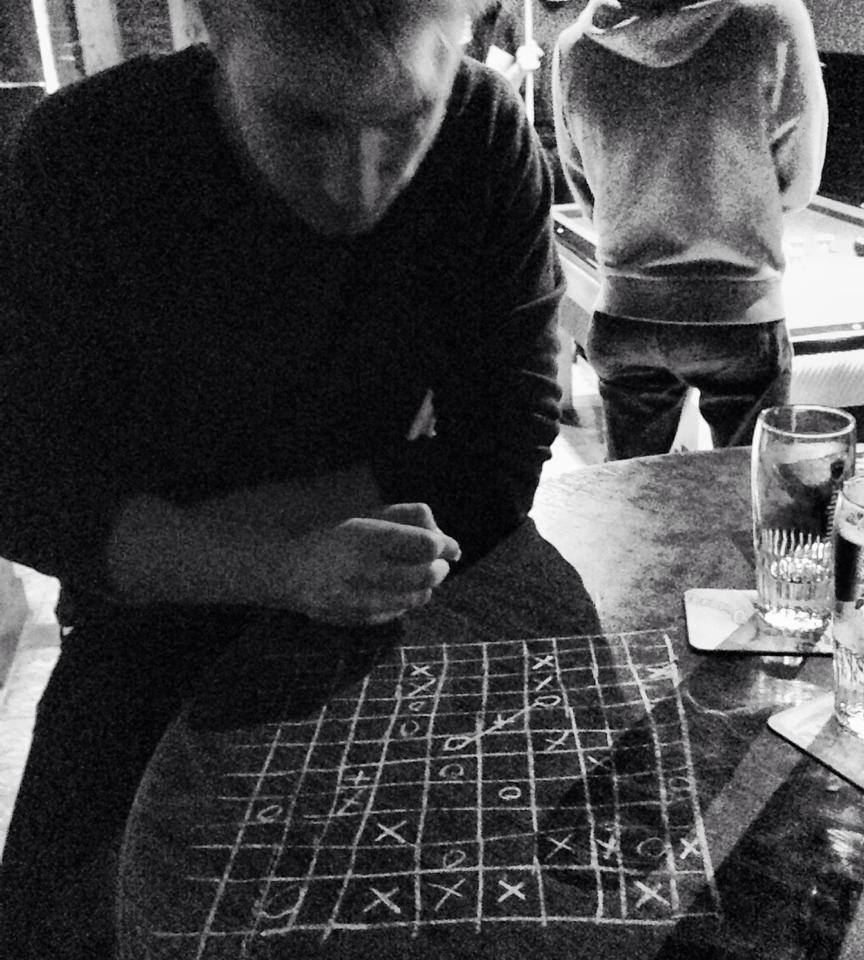

Personal information
If it keeps on rainin', levee's goin' to break If it keeps on rainin', levee's goin' to break When the levee breaks I'll have no place to stay Mean old levee taught me to weep and moan Lord mean old levee taught me to weep and moan It's got what it takes to make a mountain man leave his home Oh well, oh well, oh well Don't it make you feel bad When you're tryin' to find your way home You don't know which way to go? If you're goin' down South They got no work to do If you don't know about Chicago Cryin' won't help you prayin' won't do you no good Now cryin' won't help you prayin' won't do you no good When the levee breaks mama you got to move All last night sat on the levee and moaned All last night sat on the levee and moaned Thinkin' 'bout me baby and my happy home Going to Chicago Going to Chicago Sorry but I can't take you Going down, going down now, going down Going down now, going down Going down, going down, going down Going down now, going down Going down now, going down Going down now, going down Going d-d-d-d-down Woo, woo